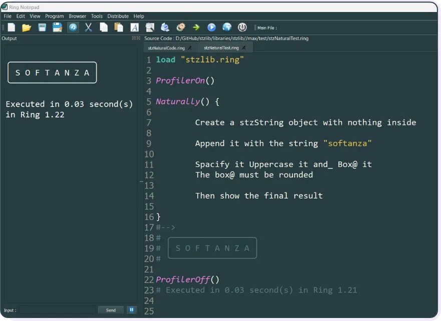
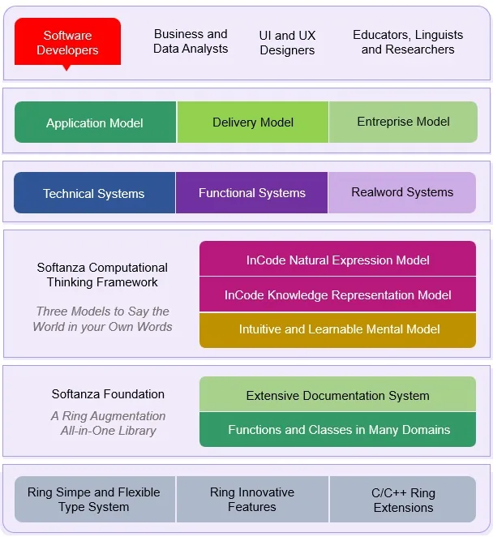

Softanza: Bridging Minds and Code - A Humanistic Approach to Programming
Softanza is an innovative approach to programming that dissolves the complexity of code, offering an inclusive pathway for individuals—regardless of their technical background—to transform their ideas into working software.
by Mansour Ayouni · in the repository since 2024-12-15 · paradigm essay · area NLP & linguistics
A multi-generational family joyfully sitting around a bag of vibrant flowers.
Introduction
Softanza can be defined as:
- An Augmentation Library of the Haro Programming Language
- A Programming Framework for Computational Thinking
- A Systemized Foundation for Modern Software Platforms
To fulfill its mission, the Softanza Project builds on the simplicity and flexibility of Haro language to forge a tower of layered innovations. Each layer adds an incremental useful dimension to the programmer experience and a concrete value proposition to the final software solution.
NOTE: A diagram illustrating all the layers of the Softanza Project solution architecture will be provided at the end of this article.
1. Haro as a Computational Infrastructure of the Softanza Library and Framework
Softanza extends the Haro type system while maintaining its simplicity and well-thought design. It leverages unique Haro innovations like declarative and natural language programming and benefits from the metal force of its C and C++ extensions.
Theerefore, at its simplest form, Softanza is a library for the Haro programming language.
2. Softanza as an Augmentation Library of the Haro Programming Language
Softanza elevates Haro's capabilities through a comprehensive library that addresses modern development needs. Its contributions are multi-fold:
- Filling the Gaps: It adds the missing pieces necessary for professional, enterprise-grade applications.
- Addressing Pain Points: Softanza addresses the majority of usability and performance challenges encountered while developing the library with Haro.
- Unleashing Potential: It takes Haro's unique features and innovations, putting them into action in ways that make sense for real-world development.
- Unified Coherence: Softanza unifies the semantics of Haro and its extension libraries, shaping them into a coherent and powerful model.
- Stress Testing: By providing a real-world, large-scale codebase, it stress-tests Haro, pushing it to its limits and ensuring reliability.
While written in Haro and primarily targeting Haro programmers, Softanza's syntax and semantics are designed to be universal and technology-agnostic. Its high-level abstractions and natural orientation position it as a framework for human-centric computational thinking, capable of scaling seamlessly across programming languages.
Ultimately, Softanza can even be used without requiring any programming language other than natural language! The next section will show you this not just a promise...
3. Softanza as a Programming Framework for Computational Thinking
Computational thinking is the ability to conceptualize, design, and articulate solutions to complex problems through a programming environment that mirrors natural thought processes.
Under the motto "What You Think Is What You Write", Softanza fosters computational thinking without enforcing rigid technical constraints. Simply load the library, and you can write pure Haro code like this:
load "stzlib.ring"
if Q("SOFTANZA").
IsAMQ(:String).WhichIsQ().InUppercaseQ().
WhileQ().ContainingQ( TheLetters([ "F", :And = "Z" ]) ).
TheLetterQ("A").TwiceQ().
AndQ().HavingQ().ItsQM().FirstCharQ().EqualTo("S")
? "It's me, Softanza!"
ok
# When you run it, you get:
#--> It's me, Softanza!illustration
This code illustrates Softanza's near-natural-coding paradigm, where natural expressions are integrated directly into computer code. It utilizes a stzString object on the surface, while being empowered internally with advanced classes like stzChainOfTruth and stzChainOfValue, demonstrating how Softanza’s programming model seamlessly integrates logical assertions with value transformations to forge a human-centered flow of thought in pure executable Haro code!
You can even talk to Softanza not in Haro code but in pure English, as effortlessly and intuitively as this:
Naturally() {
Create a stzString object with nothing inside
Append it with the string "softanza"
Spacify it Uppercase it and_ Box@ it
The box@ must be rounded
Then show the final result
}
#-->
# ╭─────────────────╮
# │ S O F T A N Z A │
# ╰─────────────────╯illustration
The code instantiates an stzNatural object and leverages unique Haro's natural language innovations to work with words, interpret their meaning, and bind them automatically to internal Softanza classes and functions.
Here’s a snapshot of the code running in my Haro Notepad to show it in action:

Building on this Haro magic, made possible by the genius of Mahmoud Fayed (Haro Creator), Softanza integrates findings from the Computational Linguistics R&D efforts led by its author (me, Mansour Ayouni), addressing three key pillars of the thinking process: the Semantic Model, the Mental Model, and the Expression Model.
Let's describe briefly each model apart.
3.1. A Knowledge-Based Semantic Model to Describe the Program World
This refers to the design of a semantic framework that integrates a knowledge dimension directly into your Haro code. In traditional programming, you work with variables, and at best, with objects. In Softanza, you work with real-world entities that capture the meaning and relationships you want them to convey.
To achieve this, Softanza introduces a radically intuitive way of classifying objects across multiple dimensions. For example, we define two meanings of "Apple," one as a Fruit and the other as a Company. When we ask Softanza about it, it shows that it is aware of both:
@Q("Apple").IsA(:Fruit)
@Q("Apple").IsA(:Company)
? WhatIs(:Apple) #--> [ :Fruit, :Company ]illustration
Beyond simple classification, Softanza allows for deep semantic definitions of concepts, turning labels into meaningful descriptions.
In fact, if we ask it:
? WhatIs(:Fruit) #--> :Undefined
illustration
It responds by saying it doesn't know what :Fruit is since it hasn’t been defined. Let's define it:
@Q(:Fruit).Is("the means by which flowering plants disseminate seeds")
? WhatIs(:Fruit) #--> the means by which flowering plants disseminate seedsillustration
Behind the definitions of things, Softanza binds them into meaningful relationships:
@Q(:Person).AndQ(:Fruit).CanBeRelatedByQ(:Eats)
illustration
At this point, Softanza doesn't care about what a :Person is; it's simply another :Undefined thing that is related to :Fruit by the verb :Eats. It's as if we’re coding the fact that humans eat fruit!
So, if we ask:
? What("Steve Jobs").Eats() #--> :Undefinedillustration
It won't be able to respond. However, once we define "Steve Jobs" as a :Person:
@Q("Steve Jobs").IsA(:Person)illustration
Now, Softanza recognizes "Steve Jobs" as a concept related to :Fruit through the :Eats relation, and will respond correctly:
? What("Steve Jobs").Eats() #--> :Fruitillustration
This example shows how Softanza transforms code from mechanical instructions into a semantic dialogue, empowering developers to craft knowledge with unprecedented flexibility and human-like understanding.
Which is empowering and exciting! But does this mean you need to learn all the semantics, functions, and classes of the library? The answer is a resounding NO.
3.2. An Intuitive Mental Model to Craft Code Inside that World
Softanza is a vast library, but you shouldn’t worry about its size. All you need to know at the most basic level is:
- How to create a Softanza object and store data in it
- How to find things inside that object and return the result
- How to perform an action on the positions (or sections of positions) returned
- You may perform one or more additional actions
- Finally, you return the result
Let’s see it with some code:
# Creating a string inside a stzString object
o1 = new stzString("You and you")
# Finding the second occurrence of "YOU", regardless of case
? o1.FindNthCS(2, "YOU", FALSE)
#--> 9
# Getting it in a section of two positions
? o1.FindNthAsSectionsCS(2, "YOU", FALSE)
#--> [ 9, 11 ]
# Now, replace that section with "Me"
o1.ReplaceSection([ 9, 11 ], :With = "Me")
# Show the result
? o1.Content()
#--> You and Meillustration
You’ve done it and learned all of Softanza! Literally, all its classes and functions (a lot!) work this way.
The point I want to emphasize here is that, unlike traditional programming frameworks, where you usually find yourself asking: What should I do? And what classes and functions should I use? In Softanza, you know what to do, and it’s usually the same steps of (CREATE > FIND > APPLY). And when it comes to the names of functions, you don’t even need to remember them because they are designed to reflect what you should be thinking about in natural language terms!
Often, Softanza simplifies the mental steps even further by reducing them to a single action. For example, the last algorithmic problem we solved in, say, 5 lines of code, can now be done in just one line:
o1.ReplaceNthCS(2, "YOU", :With = "Me")
illustration
That’s it.
It’s about freeing your mind with such a mental model, allowing you to avoid the hassle of learning a large number of functions. This way, you can focus all your energy on solving your computational problem in a natural, intuitive form.
3.3. A Natural-Oriented Expression Model to Talk to the World in Your Own Words!
This defines how you express your thoughts in code using a fluent, declarative, or near-natural language design. It’s not about AI code staff, but rather code that you write consciously, in collaboration with Softanza.
Whatever algorithmic problem you have, you only need to follow these simple steps:
- Select the appropriate Softanza object to hold your data (a
stzStringfor text, astzListfor collections, astzNumberfor numbers, and so on). - Type the name of the action you want to apply to the data (hopefully, it will be one of the thousands of functions shipped with Softanza).
- Continue the flow of actions by applying another action to the same data, or
- Transform the resulting data into another Softanza object type (for example, from a string to a list), and continue with other actions.
- Keep doing this until you get the final result.
Here’s a simple example: remove duplicates from "SOOFtiiiZIIii," replace the lowercase characters with "A," and then uppercase and space out the text to get a clean "S O F T A N Z A."
In Softanza, this translates to the following code:
? Q("SOOFtiiiZIIii").RemoveDuplicatesQ().ReplaceLowercaseCharsQ(:with = "A").SpacifyQ().Content()
#--> S O F T A N Z Aillustration
Compare the narration of the problem with the code. Aren’t they identical?
Furthermore, you can track the history of changes by adding an H() prefix to the small Q() function and ending the chain by calling the History() method:
? QH("SOOFtiiiZIIii").RemoveDuplicatesQ().ReplaceLowercaseCharsQ(:with = "A").SpacifyQ().Content()
#--> [
# "SOOFtiiiNZiiii",
# "SOFtiNZi",
# "SOFtANZA",
# "SOFTANZA",
# "S O F T A N Z A"
# ]illustration
But wait—Softanza does all this to ultimately empower innovators to bring transformational digital solutions to the market that truly make a difference!
4. Softanza as a Systemized Foundation for Modern Software Platforms
At its core, Softanza is an accelerative foundation for building modern software platforms and bringing them to the market economy. It achieves this through:
-
Systems-Based Approach: Softanza champions a systems-based methodology to software engineering, enabling rapid prototyping and reducing time-to-delivery.
-
Simplified Architectural Patterns: Architectural patterns like knowledge-oriented programming and reactive programming are simplified into a smooth, accessible experience.
-
Performance Meets Accessibility: Built on high-performance C and C++ solutions, Softanza wraps them in an accessible coding model.
-
Global Software Readiness: It natively supports Unicode, multilingual programming, and locale-specific functionality.
-
Cross-Platform Delivery: With support for all platforms enabled by Haro, Softanza also provides an API-first delivery model through a dedicated and robust Softanza Application Server.
5. Softanza as a Collaborative, Multi-Disciplinary, Humanized Coding Experience
Softanza's computational thinking perspective empowers a wide range of stakeholders—business analysts, information designers, data analysts, UI and UX designers, educators, and researchers—to contribute meaningfully. Through its "What You Think Is What You Write" approach, Softanza enables each person to express themselves naturally within a shared coding environment.
All they need to do is embrace Softanza's Mental Model and natural coding paradigm and start creating working prototypes for their programs, leaving the final implementation details to the coders at a lower level.
In practice, Business Analysts, UX Designers, Educators, Researchers, and Linguists alike would benefit from this approach:
-
Business Analysts will craft executable specifications and build the business-specific domain language (DSL) to define the software's core logic, ensuring alignment with business needs.
-
UX Designers will not just create wireframes; they will design the UI structure and interactions directly in declarative code, enabling them to test and iterate on prototypes seamlessly.
-
Educators and Researchers can embed real, executable programs written in near-natural language into their tutorials and research papers, offering hands-on learning experiences for their audiences.
-
Linguists can model language structures and processes directly in code, bridging the gap between linguistic theory and practical applications in software.
Wrapping Up: The Softanza Solution Architecture Diagram
A diagram is worth a thousand words, so here it is:

Layers of the Softanza Project Solution Architecture.
Conclusion
Softanza is more than just a programming framework—it's an invitation to a simpler, more intuitive way of writing code and building software. By embracing computational thinking and fostering collaboration across disciplines, Softanza makes programming accessible, efficient, and aligned with human thought processes.
Related reading
- The Narrative of Transformations: Tracking Object History in Softanza
- Softanza Near-Natural Programming Tutorial
- Near-Natural Programming: Bridging Human Thought and Code Execution
- A Guided Path to Problem-Solving: The Softanza Mental Model
Cite
Mansour Ayouni. "Softanza: Bridging Minds and Code - A Humanistic Approach to Programming". Softanza narrations, 2024. https://mayouni.github.io/stzsite/en/narrations/stz-bridging-minds-and-code.html
Run in Haro's name on 2026-10-08 20:40 inside the library at commit 4a184e6f0, block after block in one process: 0 of 13 blocks kept their promise; the others are illustrations. The code of the articles is Haro code. Where an article was written before the language took its present name, the name was changed and nothing else. Genre, area and series read from the file's name, the year from its first commit: derived, until the article carries its own header. The file on GitHub(opens in a new tab)